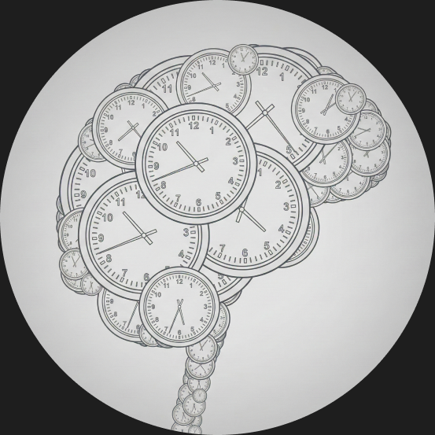
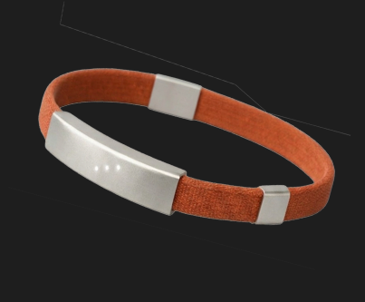
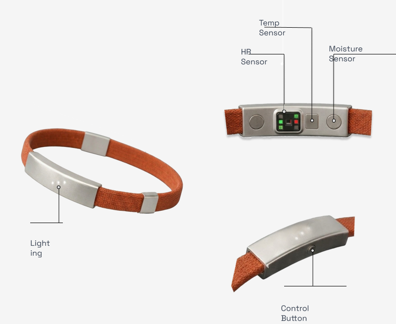

Redefining your sense of time.


We have tools to track our steps, our sleep, our screen time — but nothing tells us when we've slipped out of focus or how long we've been stuck there. Young professionals don't lose their days to laziness; they lose them to invisible mental drift and hours spent in the wrong cognitive state, with no signal that anything is wrong.
FLUX makes chronoception — the human sense of time — legible for the first time. By pairing a minimalist wristband with an intelligent app, we translate physiological data into a real-time cognitive state signal, bridging the gap between perceived time and objective reality.
Young professionals, 22–35
High-functioning, digitally native knowledge workers who feel their focus slipping but have no way to see where the time actually went.
The neurodivergent core
Adults with ADHD lose 51% of their work time to distraction, nearly double the 25% lost by neurotypical peers — the sharpest edge of the problem FLUX was built to address.

You want to work but aren't yet focused. Tap to begin — FLUX prompts your intention and enables Do Not Disturb across selected apps.
1. Detect
Track nervous system patterns to identify Flow, Drift, or Stress states in real time.
2. Alert
Gentle tactile and LED nudges when your state misaligns with your intention.
3. Align
Review weekly insights to actively rebuild your chronoception over time.
1 hour lost to distraction daily
per US knowledge worker — the baseline cost this project set out to address.
23 minutes to regain focus
after a single interruption, according to attention-research benchmarks.
51% of work time lost
by adults with ADHD, versus 25% for neurotypical peers — the sharpest edge of the problem.
1. Clinical validation
Partner with sleep and attention researchers to benchmark the sensor model against clinical-grade EEG baselines.
2. Adaptive interventions
Learn each person's individual flow and drift rhythm so FLUX can anticipate a state shift instead of just reacting to it.
3. Team-level insights
Aggregate anonymized flow data across a team to surface systemic scheduling problems, not just individual habits.
See it in action.
View Prototype ↗